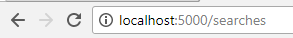

Image Search
This page allows you to search for images using Google Custom Search API
Search can be done through our search field or directly from the address bar. Use whichever way is more convienient for you.
Examples of direct address bar use

You can see latest queries here - >
Latest search address-bar-use
